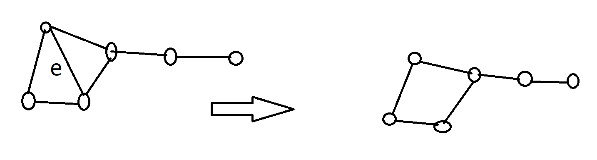

graf planarny \(K_4\)
*odwołany z powody koronawirusa
(2020-04-01)
Dowolne ciągłe odwzorowanie \(\gamma:[a,b] \rightarrow \reals^n\)
taka krzywa \(\gamma:[a,b] \rightarrow \reals^n\), że \(\gamma(a) = \gamma(b)\) oraz, że \(\gamma\) jest różnowartościowe na przedziale \((a,b)\).
Wyobrażać ją sobie możemy jako pętlę bez przecięć.
Każda krzywa Jordana rozdziela płaszczyznę na dwa rozłączone obszary i jest ich wspólnym brzegiem.
Jordan's curve
Graf \(G=(V,E)\) jest grafem planarnym jeśli jego wierzchołki możemy przedstawić jako punkty płaszczyzny, a krawędzie jako krzywe na płaszczyźnie łączące wierzchołki, przy czym punktami wspólnymi dwóch różnych krawędzi mogą być tylko ich końcowe wierzchołki.
Poniżej widzimy, że graf \(K_4\) jest grafem planarnym.
graf planarny \(K_4\)
Graf \(K_{2,4}\) również jest planarny.
graf planarny \(K_{2,4}\)
Nieformalny dowód \(K_{3,3}\) jest nie-planarny
Udowodnimy to \(Twierdzenie\) w późniejszej części tego wykładu.
Niech \(G\) będzie zbiorem punktów i krawędzi.
Jest to zbiór domknięty.
Zbiór \(\reals^2 \setminus G\) rozkłada się na spójne składowe zwane regionami (ścianami):

reprezentacja planarna grafu
Przykładowo, tutaj mamy 4 regiony (ściany) przy czym region \(F_0\) jest nieograniczony.
W przypadku drzewa istnieje tylko jeden region (ściana):

drzewo
Niech \(F\) oznacza liczbę regionów (ścian), \(E\) liczbę krawędzi oraz \(V\) liczbę wierzchołków spójnego grafu planarnego.
Wówczas mamy \(F - E + V = 2\).
Ustalmy liczbę \(V\). Dowód robimy indukcją po liczbie krawędzi. Ze spójności grafu wynika, że \(E \ge V-1\).
Jeśli \(E=V-1\), to graf jest drzewem, nie ma więc cyklu, więc ma tylko jeden region (ścianę). Oczywiście wówczas mamy faktycznie \[ F - E + V = 1 - (V-1) + V = 2 \]
Załóżmy więc, że \(E>V-1\). Wtedy graf ma cykl. Niech \(e\) będzie krawędzią z tego cyklu. Krawędź \(e\) leży na brzegu dwóch ścian (jedną z nich może być region nieograniczony).
Usuńmy \(e\) z grafu: 
Liczba \(E\) zmalała o jeden, liczba \(F\) zmalała o jeden, a liczba \(V\) nie uległa zmianie. Wartość wyrażenia \(F - E + V\) nie uległa więc zmianie. Więc jest nadal równa \(2\).
Wszystkie planarne realizacje grafu spójnego mają taką samą liczbę ścian.
Niech \(G\) będzie prostym grafem planarnym \(V\ge3\).
Wówczas \[
E \le 3\cdot V - 6
\] a jeśli graf nie zawiera trójkątów to \[
E \le 2\cdot V - 4
\]
Pomnóżmy ją przez \(3\) i zastosujmy poprzednią nierówność \[ 6 = 3F - 3E + 3V \le 2E - 3E + 3V = -E + 3V \] dowód dr Sarada Herke
Pomnóżmy ją przez \(4\) i zastosujmy poprzednią nierówność \[ \begin{aligned} 8 = 4F - 4E + 4V \le&~ 2E - 4E + 4V = -2E + 4V\\ 4 \le&~ -E + 2V\\ E \le&~ 2 V - 4 \end{aligned} \]
Liczba krawędzi w grafie planarnym jest dosyć mała, bo ograniczyć ją można przez \(3V\), czyli jest rzędu \(O(V)\) - to bardzo przydaje się w geometrii obliczeniowej.
Gdyby był planarny to \(10 = E \le 3V - 6 = 3\cdot 5 - 6 = 9\).
Gdyby był planarny to \(9 = E \le 2V - 4 = 2 \cdot 6 - 4 = 8\).
Załóżmy, że \(G = (V,E)\) jest grafem planarnym. Wtedy istnieje wierzchołek \(v\) taki, że \(\deg(v) \le 5\)
Ta własność przyda nam się, gdy będziemy zajmowali się kolorowaniem grafów.
Załóżmy, że \((\forall v\in V)(\deg(v) \ge 6)\).
Wówczas \[
6 \cdot \lvert V\rvert \le \sum_{v\in V} \deg(V) = 2\cdot E \le 2\cdot (3 \cdot \lvert V \rvert -2) = 6 \cdot \lvert V \rvert - 6
\] Otrzymaliśmy więc sprzeczność.